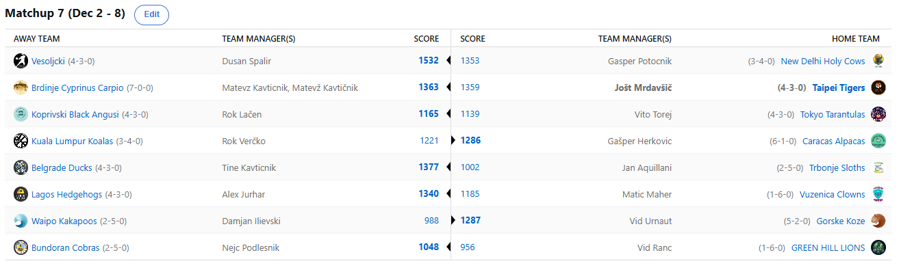

SEZONA 24/25
- Pravila in sistem tekmovanja
- Matchup1 (Oct 22 - Oct 27)
- Matchup2 (Oct 28 - Nov 3)
- Matchup3 (Nov 4 - Nov 10)
- Matchup4 (Nov 11 - Nov 17)
- Matchup5 (Nov 18 - Nov 24)
- Matchup6 (Nov 25 - Dec 1)
- Matchup7 (Dec 2 - Dec 8)
- Matchup8 (Dec 9 - Dec 15)
- Matchup9 (Dec 16 - Dec 22)
- Matchup10 (Dec 23 - Jan 29)
- Matchup11 (Dec 30 - Jan 5)
- Matchup12 (Jan 6 - Jan 12)
- Matchup13 (Jan 13 - Jan 19)
- Matchup14 (Jan 20 - Feb 26)
- Matchup15 (Jan 27 - Feb 2)
- Play-in (Feb 3 - Feb 23)
- Playoff 1 (Feb 24 - Mar 9)
- Playoff 2 (Mar 10 - Mar 23)
- Playoff 3 (Mar 24 - Apr 6)
2024/25 - Fantasy Koroška - sezona 8
MATCHUP 7 (Dec 2 - Dec 8)
Poročilo kroga
V tednu, ki obeležuje šesto obletnico izjemno bolečega poraza Urnauta in Lačna v finalnem obračunu mednarodnega beerpong turnirja v nabito polnem Shootersu proti GOAToma -
Kavtu in Joletu – smo spremljali že sedmi teden izjemno napete sezone.
Najbolj je blestel Dušan Špalir, ki je s svojimi Vesoljčki zbral zavidljivih in rekordnih 1532 točk in s tem svojemu naslednjemu nasprotniku, Kavtu,
odvzel iztrgal iz rok nagrado za najboljši krog. Na napačni strani Vesoljske invazije so se znašle Svete Krave,
ki jim ni pomagal niti Tristan da Silva, sicer znan tudi kot Wagner s Temuja. Zaradi tipkarskega škrata je sicer G€P$ zanj odštel ceno,
ki ni bila nič kaj v stilu Temuja, a G€P$ se s tem pač ne obremenjuje in trdno verjame v pravilnost svoje tokratne izbire na trgu.
Žal moramo na tej točki kot nepristranski medij sporočiti žalostno novico, da je nov vodilni v kategoriji all-time H2H recorda rjavogatnik s centralnih Brdinj –
Mato Burek Golf. Slednji je z novo obupno posrano zmago prav proti nekoč vodilnemu Joletu namreč slednjega v tej kategoriji prehitel in je zdaj
sam na vrhu. Kot slon na drevesu, ne veš kako je prišel tja, veš samo da je le vprašanje časa kdaj pade dol. 4 točke so na koncu zmanjkale
za izjemen 150+ pts preobrat v zadnjem dnevu in Jole nam je za izjavo povedal le slednje: »Jebi se Dorian Finney-Shit«.
Še tisti en izostanek, ki so ga Krapi ta teden imeli je bil v nedeljo nazaj in odločil v korist DJ Puntija. Je pa nezavidljiv »dosežek« uspel Joletu,
ki je kot prvi v zgodovini izgubil tri matchupe zapored z manj kot 50 točk razlike, za nameček pa Mato lovi še izboljšanje njegovega all-time najboljšega štarta v sezono,
ki ga bo dosegel v primeru morebitne zmage nad Duletom.
Led v žilah Koprivskih Angusov pa ni bil usoden le za KK Vitanje, ko je Voka z rutiniranim prostim metom v zadnji sekundi potopil to kavt-like antipatično franšizo,
pač pa tudi za Vita Toreja. Zakaj je sploh bilo tesno v tem Zion&Ball-less matchupu nam je sicer uganka, pa vendar je zmaga tisto kar šteje. Torej,
Vito Torej se bo moral zadovoljiti s sladko zmago proti Vranom z Vranskega in grenkim porazom proti Lačnu. Imajo na Mauriciusu in Sejšelih
dovolj dober signal, da bo Lačen v prihodnjih tednih imel narejeno postavo?
Zaostruje se tudi takozvani GajbaBattle, v katerega se na vse pretege poskuša vključiti tudi Kupster. Baje je ta mastermind s Sv. Daniela zelo aktiven na trgu ranjenih igralcev in
poskuša recreatati lansko sezono Memphis Grizlijev. Zanimiva strategija vsekakor, morda pa nam Jan pokaže nov način zmagovanja. Tokrat je bil v ničkajprida
zanimivem matchupu tepen od Beograjskih Račk. Bolezen in gikanje sta Tinki Binkiju očitno dobro deli, stavniški favorit za gajbo je zdaj izplaval iz nevarnih voda in se
priključuje zgornjemu delu lestvice. Nov logotip je vsekakor sicer skromne racake spravil na pravo pot.
Ko smo ravno pri GajbaBattlu nikakor ne moremo mimo obračuna Ranaca in Cickona. Če je njegov lastnik Cicko, pa je Embiid, ki do zdaj večinoma Čičko, tokrat prišel nazaj in
prebujajočo Philadelphijo s smrtonosnim picknrollom popeljal do zmage, s tem pa tudi Bundoranske Kobre. V sicer hiperavspuharskem obračunu je bil Nejc uspešnejši
od enega najboljših editorjev postave, Vida Ranca. Slednjemu je tudi en klik očitno preveč in to ga je drago stalo. Je pa zanimivo tudi, da samooklicani najbolj pošten
strateg lige Nejc, svojega nasprotnika tokrat ni opomnil na postavo in ko v grlo teče voda se načela pozabljajo. Saj veste, v ljubezni in vojni je dovoljeno vse.
Nova zmaga, 3. mesto na lestvici in uspešno odvoden plezalni turnir pa je izkupiček tedna za našega Vida Urnauta. Uspešen teden, ki ga je nekoliko pokvaril nesrečen trejd in poškodba lobadarja
Ingrama, pa vendarle ima Vid par razlogov za zadovoljstvo, med drugim dejstvo, da je tudi Mitchell odigral preko kurca. Tokrat noben stat correction ne
bi mogel pomagati Diliju, ki je s svojimi Kakapoji bil tokrat precej nekonkurenčen in bo svojo priložnost iskal v izjemno pomembnem dvoboju z ranjenimi Lenivci.
Brandon Podziemski pa najbrž krati spanec našemu Jurharju, ki je tega dragulja Lagoške košarke meni nič tebi nič odvrgel za brezveze na trg, kjer je odslej našel nov dom in igra kot prerojen.
Je pa morda s seboj odnesel negativno energijo, po novem so Ježki namreč na 3-game winning streako in končno je Aleks na »Killing spree-ju«,
če mu že v LOLu to redko uspe. One week wonder Maher se vrača na »pota stare slave« in z novo klovnovsko predstavo je zdaj edini, ki je le pri eni zmagi.
Če gre Maticu kaj na roko pa je to dejstvo, da ima očitno kvalitetno robo, sodeč po nekaterih trejdih, ki jih meče naokrog.
Zaključujemo pa na drugem mestu razpredelnice, kjer so Karakaške Alpake s skrajnimi napori vendarle obvladale podivjanega konjenika Jokiča, ki je svojima 102 ILR TOČKAM v b2b tekmah skoraj potegnil
Koale do presenetljive zmage. Še naprej Gašper diha za ovratnik vodilnemu Kavtu, a vendarle mu bo medsebojni poraz precej otežil delo na poti do prvega mesta,
je pa BYE vsekakor več kot dosegljiv cilj. Če bi Verčko le prišel včeraj na Koroško ligo, da bi zabeležil vsaj eno zmago ta teden … No, upamo da pride ponjo v petek na Lovrenc,
v fantasyju bo namreč znova težko … :D
8. teden in zakorakali smo v drugo polovico rednega dela. Kaj prinaša? Dva napeta obračuna med moštvi z dna razpredelnice, ki bi na pikniku radi pivo le pili in ne tudi prinesli.
Pa visokoleteče Vesoljčke, ki so naslednje upanje ljudstva v boju proti Krapom. Zanimivo pa bo tudi videti, katera krava je dominantna, Sveta ali Angus. Bo Donke v Emirates NBA Cupu
osvojil svojo prvo titulo čez lužo?